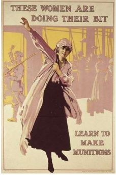
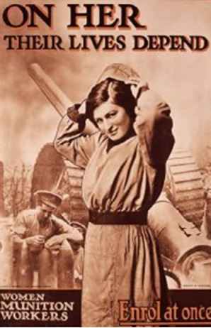
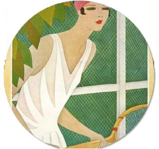

A partir de la conferencia titulada ¿Cómo influencia la historia de la moda, las tendencias
Actuales?, realizada por Sara Londoño Hoyos, Analista y Diseñadora de moda –INEXMODA-, miembro
de la Colegiatura colombiana de Diseño, realizada en el segundo ciclo de foros llevados a cabo
los días 30 de septiembre y 1 octubre 2016, en el centro Cultural Comfandi, y mi formación como
historiadora, me di a la tarea de profundizar sobre el tema , y el producto de esa inquietud,
se concreta en el artículo que a continuación presento , con el propósito de aportar a la
relación de los hechos sociales y su manifestación en la moda, en diferentes décadas,
puntualmente a partir de la primera guerra mundial hasta los 70.
Parafraseando al historiador español Josep Fontana (2013), la Historia ayuda a construir ideas
sociales que desde la perspectiva del estudio del pasado nos permiten comprender el presente y
proyectar el futuro. Esta idea nos remite directamente a recordar a Pierre Vilar (1980) quien
afirmaba que comprender el pasado es el fundamento para conocer el presente. En este sentido,
en el amplio campo de estudio de la Historia el comprender el pasado de la moda –Historia de la
Moda- nos resulta de utilidad para comprender su dinámica actual, tanto del componente creativo
como comercial, a la vez que nos ayuda a entender como a la par de la construcción de la imagen
de los individuos se han configurado los principales cambios sociales.
1900 - 1919 Amanecer del Siglo XX: Un Mundo en proceso de transformación en medio de la Guerra.
La primera guerra mundial, como el primer gran conflicto internacional se constituyó en un
acontecimiento internacional que permitió configurar tanto los nuevos órdenes políticos,
como los nuevos roles sociales. En este último aspecto se destacó de forma particular el rol de
la mujer. Ante la ausencia de los hombres que se desplazaron hacia los campos de batalla, las
mujeres se transformaron en parte fundamental del periodo de la guerra; se vieron inmersas en
los procesos de producción de armamento, confección de uniformes y cuidados de los soldados.
La coyuntura política hizo necesario que las mujeres tuvieran presencia en el mundo del trabajo.

Fuente: http://horapensar.blogspot.com/2014/05/canarias-ymunitionettes-heroicas.html
Los duros días de la guerra cambiarán para siempre el rol de las mujeres dentro de la sociedad
y abrirán paso a una nueva actitud para asumir la vida, y con ella su imagen personal. Una nueva
relación con su cuerpo y su vestuario será la constante después de terminado el conflicto (1918)
momento durante el cual las mujeres con mayor autonomía y reconocimiento como agentes activos de
la sociedad, se dieron a la tarea de encontrar un grado de independencia personal y social. Al
finalizar la guerra y superar los conflictos, la sociedad entendió que el papel de las mujeres
dentro de ésta era protagónico, que como portadoras de derechos se relacionarías de forma libre
y pensante con los demás, en este sentido el Siglo XX fue un siglo de cambio en el cual las
mujeres contribuyeron de forma contundente para la transformación de la estructura social.

Fuente: www.pinterest.es/enredhistoria/mujeres-1a-guerramundial/?lp=true
1920 - 1929 ¡Viva la Vida! Los años 20 y la idea de libertad.
Terminada la guerra y con un nuevo panorama político, económico y social emergió una nueva
mentalidad. La guerra no solo devastó naciones enteras, también afectó fuertemente la mentalidad
de las personas. El fin de la guerra significó la oportunidad de construir sobre las ruinas, de
generar un nuevo presente totalmente renovado. A nivel político se redefinieron los límites y la
influencia de cada uno de los países, se establecieron cuáles serían los países líderes a nivel
global.
sobreponerse a los efectos de la guerra. Por su parte los Estados Unidos de Norteamérica
encontraran en la devastada Europa una oportunidad para fortalecer su economía, siendo el
gran beneficiario al realizar buena parte de la reconstrucción del viejo continente. El auge
económico de la bolsa, el enriquecimiento de los norteamericanos y posteriormente de alguno
europeos inversionistas, sumado a las carencias personales generadas por la guerra invitaron a
pensar en lo efímero de la vida, en la necesidad de disfrutarla en el instante; ¡La vida es una
fiesta, Se vive el aquí y el ahora! Y en esta nueva filosofía emergen el jazz, el charlestón y
las grandes fiestas.
Como resultado de las muertes en guerra, la población femenina sobrepasó a la masculina; muchas
enviudaron, otras quedaron huérfanas y el papel protagónico de los hombres quedo relegado. Así
las cosas, numerosas mujeres tomaron las riendas de su vida encontrando autonomía, otras optaron
por conquistar a los escasos hombres que regresaron del conflicto. El exaltamiento de la belleza
de la mujer, el ser el centro de atracción a través del peinado, el maquillaje, las joyas, los
accesorios y una actitud más accesible y relajada se convirtió en un nuevo patrón de
comportamiento femenino, sin embargo, no serán las mismas y lucharan por los principios de
igualdad, quitaran los corsés de sus cuerpos liberando la silueta desde su vestuario, incluso
llegando a imitar la forma rectangular del cuerpo masculino a través de la utilización de fajas
que aplanaban el vientre y las caderas, ocultas en vestidos holgados , complementados con cortes
de cabello muy cortos.
La libertad.
La consigna fue: si la vida es un instante, este instante debe vivirse en pleno goce de la
juventud. Las mujeres –y los hombres- de esta década persiguieron la “eterna Juventud” a partir
del espíritu libre, las mujeres se liberaron de los preceptos morales: beber, fumar, conducir y
vivir plenamente su sexualidad, esa fue la postura. La publicación en 1922 de la Garçonne de
Victor Margueritte “revolucionó el estereotipo tradicional de la mujer que desde Francia se
exportó al resto de Europa” (Adán. 2009. P. 74), una historia que cuenta la vida de Monique,
una joven que tras una decepción amorosa decidió llevar una vida orientada a la libertad.
Mujeres de pelo corto, que vestían ropa masculina, trabajaban y se entregaban sin remordimientos
a los placeres de los amores libres, disfrutando de todo lo escandaloso y prohibido fue el nuevo
modelo de libertad femenina.
Vestidos de fiesta con apliques de lentejuelas resaltaban las partes del cuerpo, normalmente
ocultas; flecos y colgantes centraban la atención al bailar sobre las ahora piernas descubiertas;
cabellos muy cortos de gran similitud al corte masculino, cuerpos delgados ejercitados, zapatos
diseñados exclusivamente para el baile y joyas vistosas, plumas, y demás accesorios denotaban la
idea de la libertad económica, amorosa y expresión de la estética individual.
Las Flapper.
Mujeres jóvenes que usaban faldas cortas, no llevaban corsé, lucían un corte de cabello especial
(denominado bob cut), escuchaban y bailaban Jazz, una música no convencional para esa época.
El fenómeno Flapper, reunió a un grupo de mujeres decididas a no permanecer en sus casas, ni a
seguir el modelo de mujer- madre, fueron las que encontraron el placer en la vida nocturna, en
el deporte y en general en todas aquellas actividades reservadas para los hombres.
Las principales características de esta transformación se evidencian en la moda como se refiere
a continuación:
Vestidos de día se transforman en vestidos cortos imitando los de la noche.
Las prácticas deportivas inspiraron los trajes diurnos.
Se popularizó el uso de Faldas Midi Plizadas, Jerseys en algodón y vestidos camiseros hechos con seda.
Collares de perlas.
Suntuosas joyas y grandes broches de estilo art decó.
Boas y abanicos de plumas de avestruz teñidas.
Boquillas largas para los cigarrillos.
Cajas de maquillaje y pestañina.
Se hace habitual el uso de turbantes, bandas, boinas y sombreros, especialmente el cloché.
Algunas mujeres forraban los zapatos de la misma tela del vestido.
Cortes de pelo estilo “garçon” ya fuera con o sin cinta en la frente, liso u ondulado.
El maquillaje recargado.
Uñas dando fin a las uñas al natural.
La moda se vio influenciada por Poiret, Lanvin, Jean Patou, Vionet, quien introdujo el corte al
bies o Mariano Fortuny con su novedosa técnica de plisado. Pero sobre todo por las dos modistas
más transgresoras de la época, Gabrielle Chanel quien introdujo las faldas cortas y el little
black dress y la italiana establecida en París Elsa Schiaparelli, con sus extravagantes y
surrealistas diseños

Fuente: www.pinterest.es/pin/355502964321659355/?lp=true